Case study — UX/UI & Frontend
TooYen+
An app that helps families keep track of what's actually in the fridge — so groceries get cooked before they get thrown away.
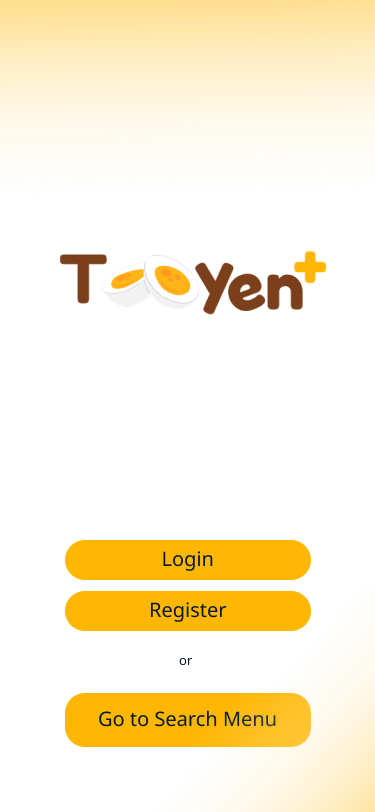
It started with my own fridge, not a brief.
Living in a dorm, I kept buying groceries to cook with — and kept throwing half of them away. Expired, forgotten, wasted. Talking it through with friends, family, and my own habits (informal, unstructured conversations, not a formal study), I realised it wasn't just me. Three things kept coming up.
Out of sight, out of mind
People buy groceries but forget about them until they expire — food waste from losing visual contact, not from not caring.
"What do I even cook?"
Even with fresh ingredients on hand, deciding what to make is a small mental tax — one that usually loses to ordering food instead.
Nobody knows whose it is
In a shared kitchen — a dorm, a family fridge — it's unclear what belongs to whom, so things get used by accident, or wasted out of caution.
UX/UI Designer & Frontend Developer
On a 6-person course team, I paired with one teammate on design and frontend. Everything below is a screen I designed and built myself.
- Authentication — login & register
- Fridge & ingredient management
- Menu search, filtering & recommendations
- Recipe detail, creation & editing
- Cooking confirmation flow
- Profile & notifications
Not pictured here: the app's main/landing surface (built by my teammate), and the database/ERD, owned by teammates on the backend side.
End-to-end design
Low-fidelity sketches through to near-code-ready, high-fidelity prototypes in Figma.
Facilitation
Reviewed designs with the developers building my flows, to catch constraints early rather than after the fact.
Frontend development
Implemented these features myself in React Native, aiming for pixel-accurate results.
Testing
Wrote and ran functional test cases, and fixed bugs found along the way.
From requirements to a working screen.
Requirements gathering
As a team, we documented 42 requirements using MoSCoW prioritisation — Must / Should / Could / Won't have — across Functional, Technical, Operational, KPI and Transitional categories.
Use case mapping
Requirements became a use case diagram across three actor types — Admin, Guest, User — covering fridge membership, ingredient filtering, and recipe search.
Process flows (BPMN)
Every feature I owned was modelled step-by-step across User and Application swimlanes before a single screen was drawn — sign up, fridge membership, ingredient ownership, recommendations, reminders.
Wireframes → high-fidelity UI
Low-fidelity first, to settle structure and hierarchy — then the final interface: a warm orange identity, card-based browsing, tabbed ingredient/instruction views.
Three ideas doing most of the work.
Expiration tracker
Automatically calculates days remaining on each ingredient, and sends timely notifications nudging users to cook it before it spoils.
Household sync
A real-time, shared inventory so every household member sees the same fridge contents — fewer duplicate purchases, clearer ownership.
What's next: less typing
This build focused on getting manual entry right. The natural next step is a barcode/OCR receipt scan, so users type in far less by hand.
Every screen here, low-fi to final.
Scroll each row sideways on smaller screens. Tap any screen to see it larger.
Getting started
Early low-fi wireframes for Login and Register, next to the final landing and Register screens.
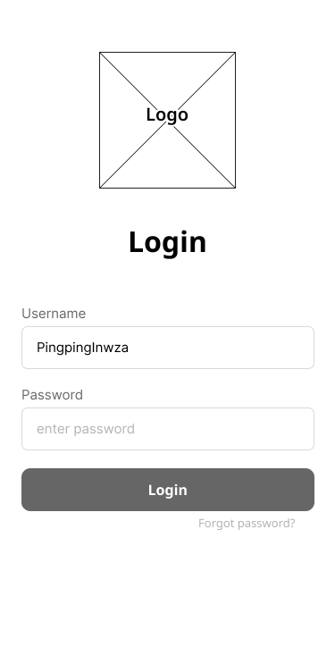
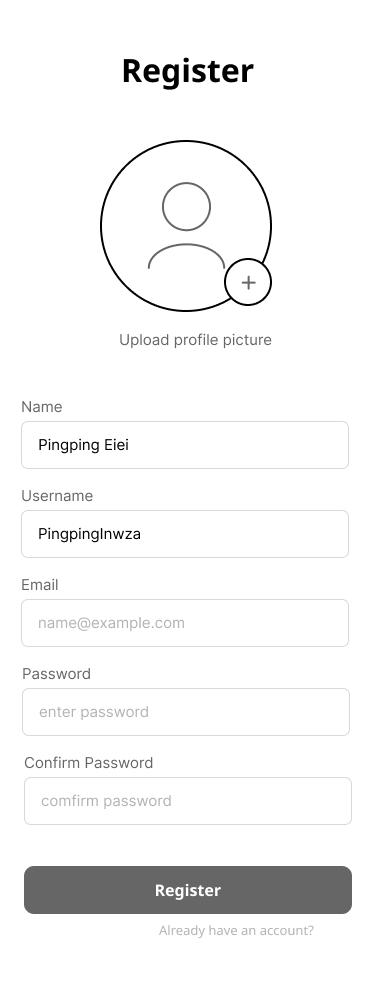
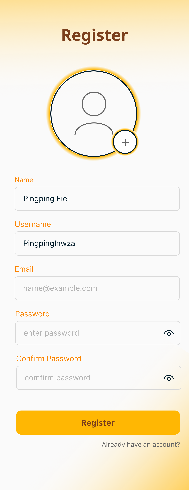
Fridge & ingredients
Fridges a user belongs to, and picking which one to manage.
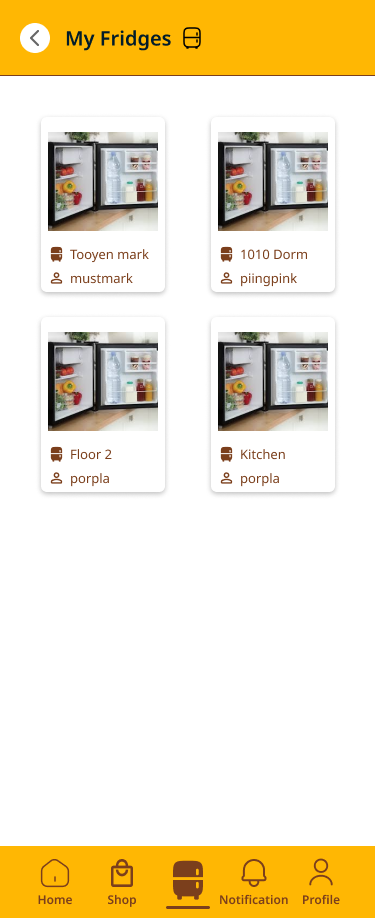
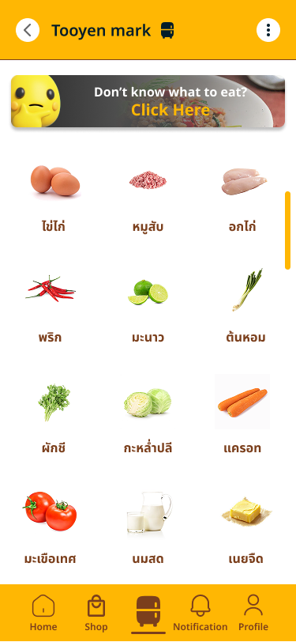
Browsing & filtering recipes
Searching by name, or filtering by ingredients already on hand.
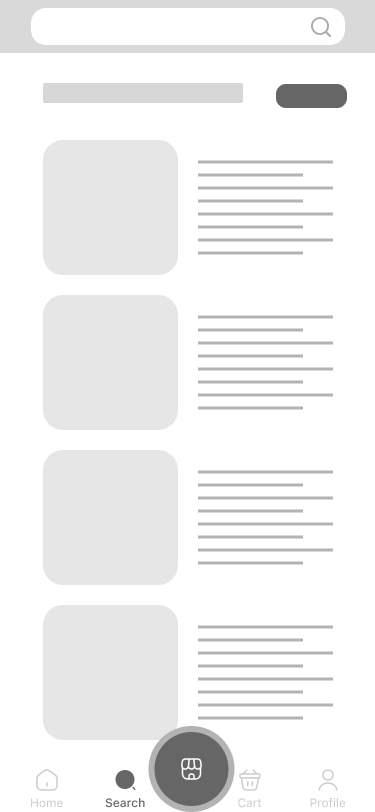
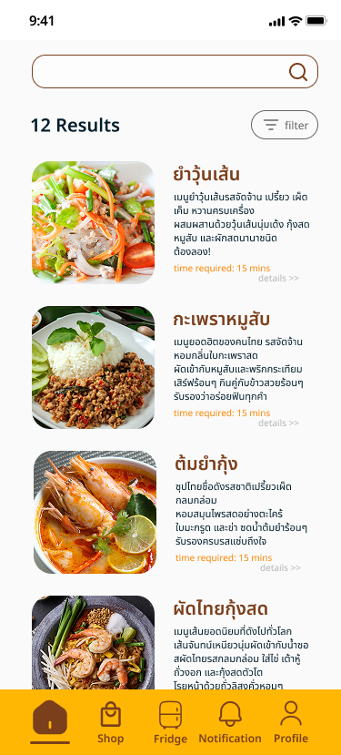
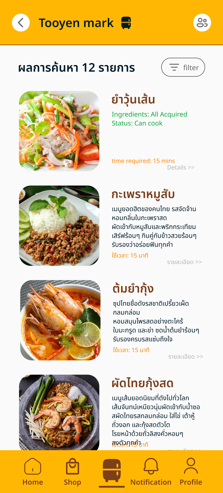
Recipe detail
Two states by design: browsing someone else's recipe (no edit access) vs. viewing your own.
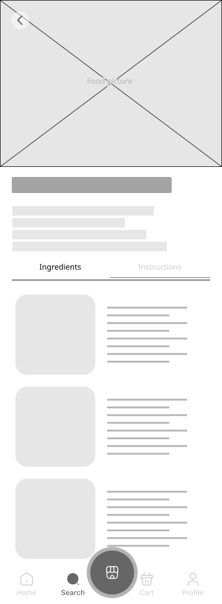
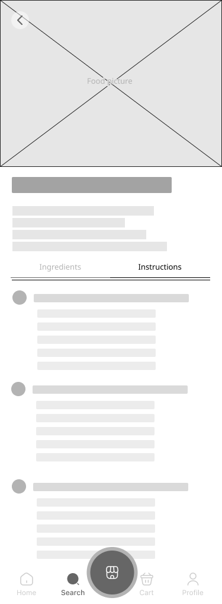
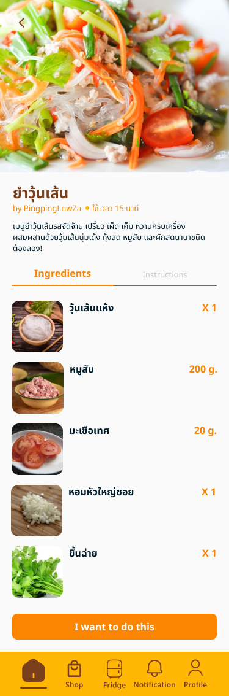
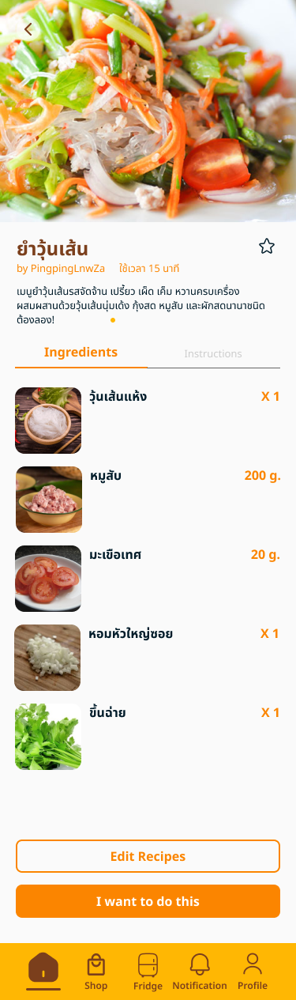
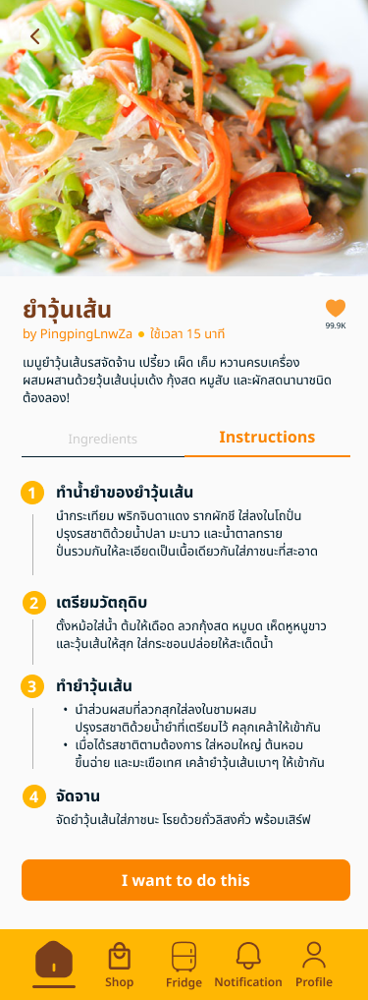
Cooking with what you have
Before committing to cook, the app checks the fridge against the recipe — and is upfront about what's missing.
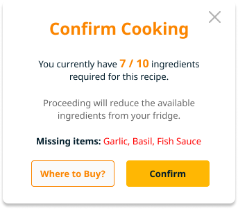
Profile & notifications
Dietary habits — Intermittent Fasting, Halal, Vegetarian — plus expiry and meal-time reminders.
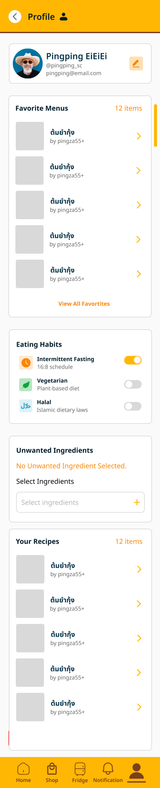
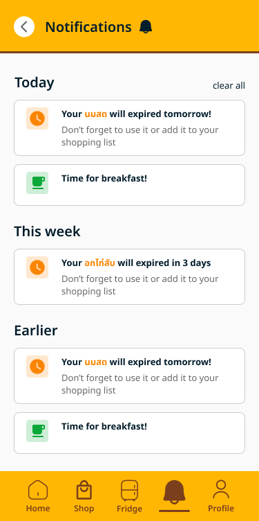
Two rebuilds, two different reasons.
Two screens in this project got fully rebuilt — for very different reasons.
Rebuilding the recipe editor — self-critique
This screen went through several full redesigns before I landed on a version I was satisfied with.
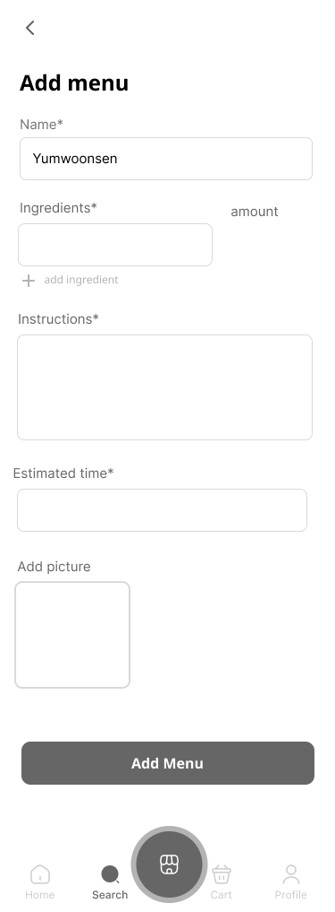
Before
One flat form — name, a single ingredients field, one large instructions box. It worked, but it treated a recipe like a generic data-entry form, not something meant to be followed step-by-step while actually cooking.
After
Instructions broken into numbered, individually-editable steps, each carrying only the ingredients relevant to that step. The visual language shifted to the app's warm orange identity — so it reads as a cooking screen, not a settings form.
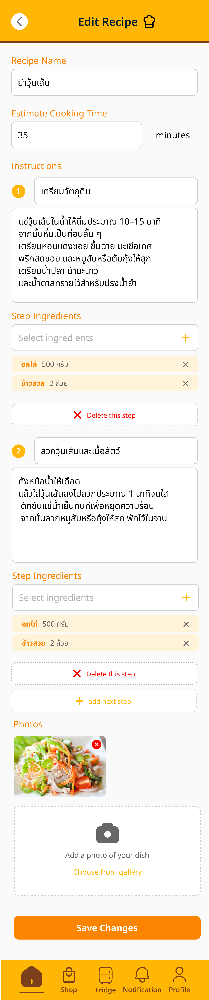
Redesigning Notifications — inherited, then rebuilt
The original notifications screen was a teammate's design. I took it over and rebuilt it — grouping alerts by Today / This Week / Earlier instead of one flat list, and restyling it to match the rest of the app rather than sit apart from it.
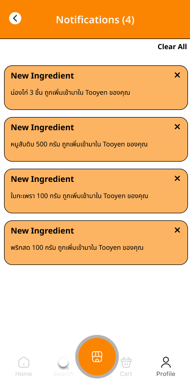
Before
A teammate's original design — one flat list of alerts, with no grouping by urgency or time, and a visual style that sat apart from the rest of the app.
After
Alerts grouped by Today / This Week / Earlier, restyled to match the rest of the app's identity instead of standing apart from it.
What held up, and what I'd still want to check.
Testing
The upfront conversations shaped the problem and the design decisions. What I didn't do was test the finished interface with real users. Testing here was QA-style functional verification — 20 test cases covering:
- Registration edge cases — duplicate username, invalid email, weak password
- Fridge member management — valid/invalid or duplicate members
- Ingredient-based search — with/without filters, empty fridge
- Recipe creation validation — missing fields, duplicate names
This confirmed the logic held up under bad input — but it's a real gap: no usability validation on whether decisions like the recipe editor rebuild actually worked better for someone cooking dinner, versus just working better to me.
Lessons learned
Planning is just as important as coding. An unstructured workflow quietly extended the timeline — next project, I want clear milestones and weekly sprints set up front, so effort stays focused instead of drifting.
Being both designer and developer let me catch technical blockers early, during design rather than after. Understanding code helped me design UI that was not just good-looking, but actually feasible to build on time.
Rebuilding the recipe editor got the structure right, but without another person's eyes on it, I was guessing at what "felt done." It's the clearest gap here — and exactly what real usability testing is for.